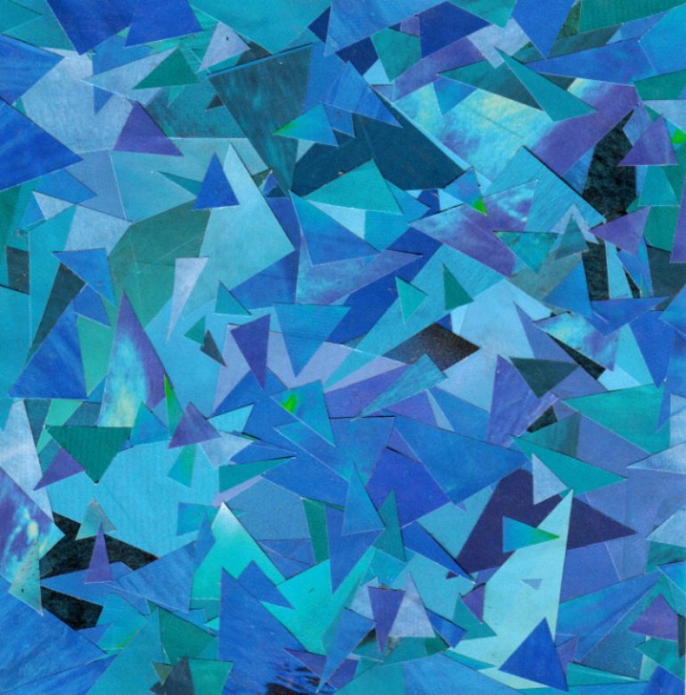
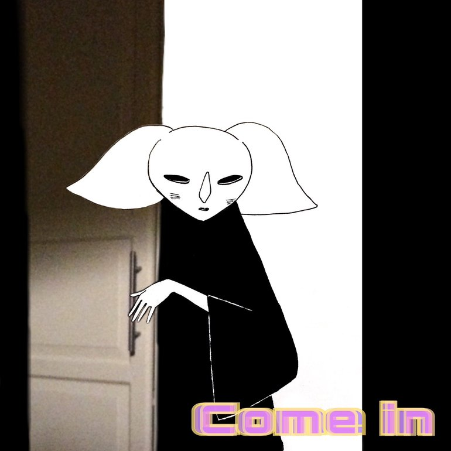
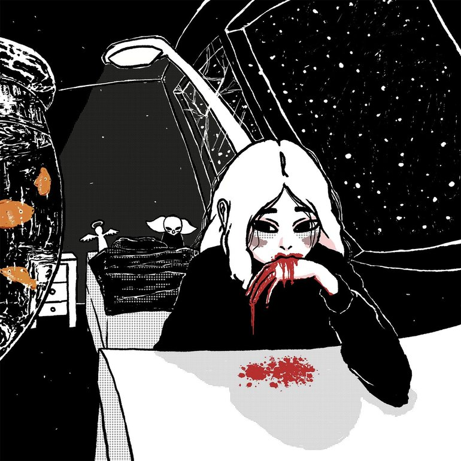
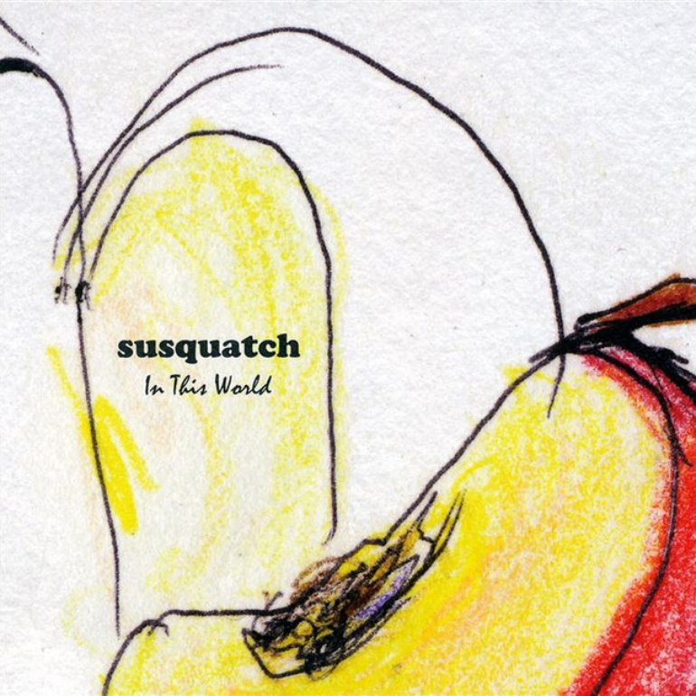

Interests
Inspired by 7vtia's interests page.Music
These are a few albums I like, hover over the images to see their names. Image sources: Last.fm.




Shows
- Doctor Who
- The Inbetweeners
Films
- Maze Runner
- Project Hail Mary
- Star Wars
Games
- Minecraft
- Terraria + tModLoader
- Scrap Mechanic
Hobbies
- I like browsing the web on my computer.
- Taking photos.